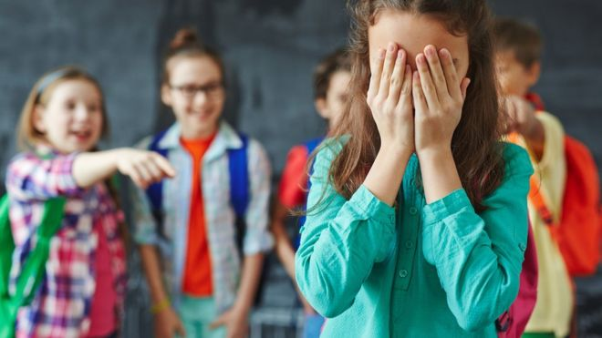
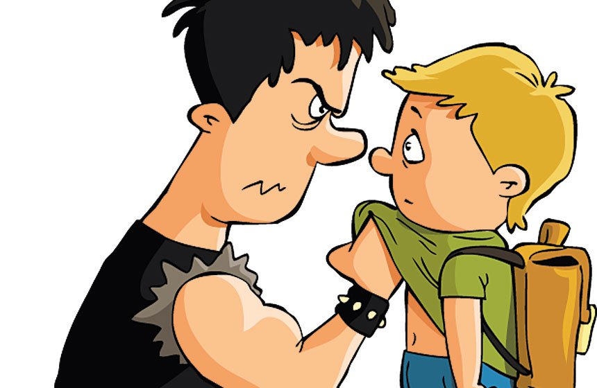
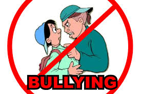

El acoso escolar (también conocido como hostigamiento escolar, matonaje escolar, maltrato escolar o en inglés bullying ) es cualquier forma de maltrato psicológico, verbal o físico producido entre estudiantes de forma reiterada a lo largo de un tiempo determinado tanto en el aula, como a través de las redes sociales, con el nombre específico de ciberacoso.
Estadísticamente, el tipo de violencia dominante es el emocional y se da mayoritariamente en la clase y en los patios escolares. Los protagonistas de los casos de acoso escolar suelen ser niños y niñas en proceso de entrada en la adolescencia. Siendo ligeramente mayor el porcentaje de niñas en el perfil de víctimas
Este tipo de violencia escolar se caracteriza, por tanto, por una reiteración encaminada a conseguir la intimidación de la víctima, implicando un abuso de poder en tanto que es ejercida por un agresor más fuerte (ya sea esta fortaleza real o percibida subjetivamente) que aquella. El sujeto maltratado queda, así, expuesto física y emocionalmente ante el sujeto maltratador, generándose como consecuencia una serie de secuelas psicológicas (aunque estas no formen parte del diagnóstico); es común que el acosado viva aterrorizado con la idea de asistir a la escuela y que se muestre muy nervioso, triste y solitario en su vida cotidiana. En algunos casos, la dureza de la situación puede acarrear pensamientos sobre el suicidio e incluso su materialización, consecuencias propias del hostigamiento hacia las personas sin límite de edad.

